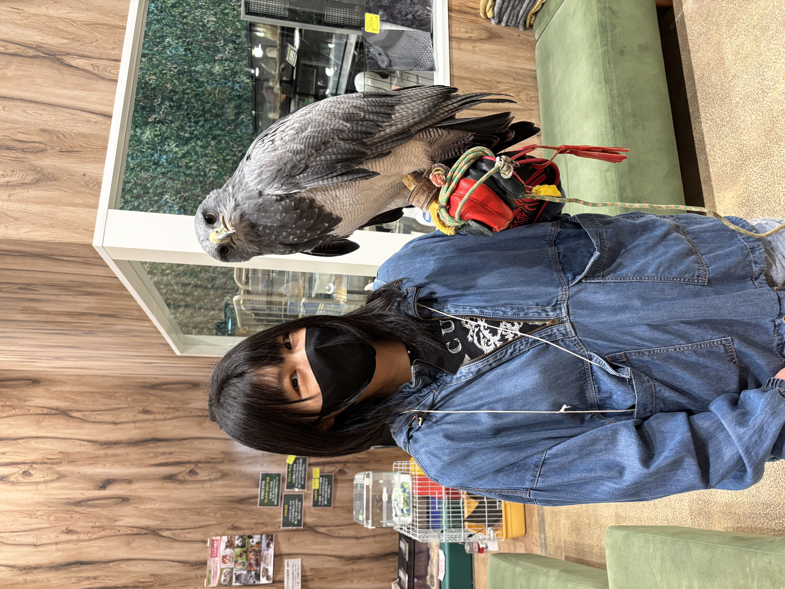
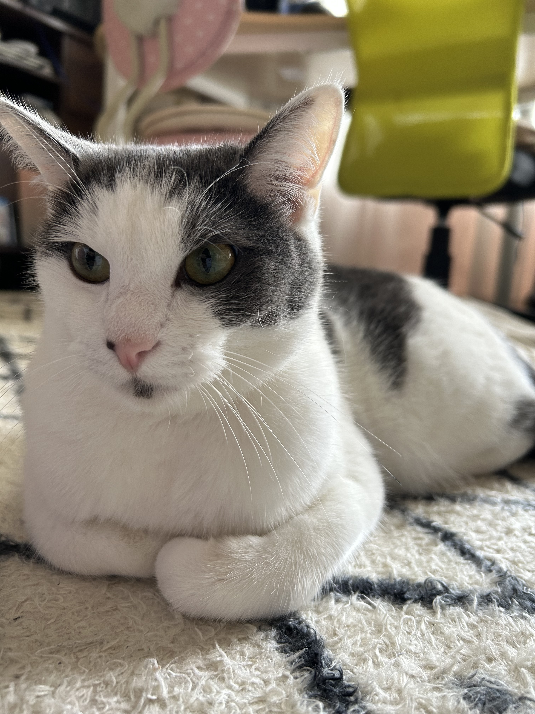
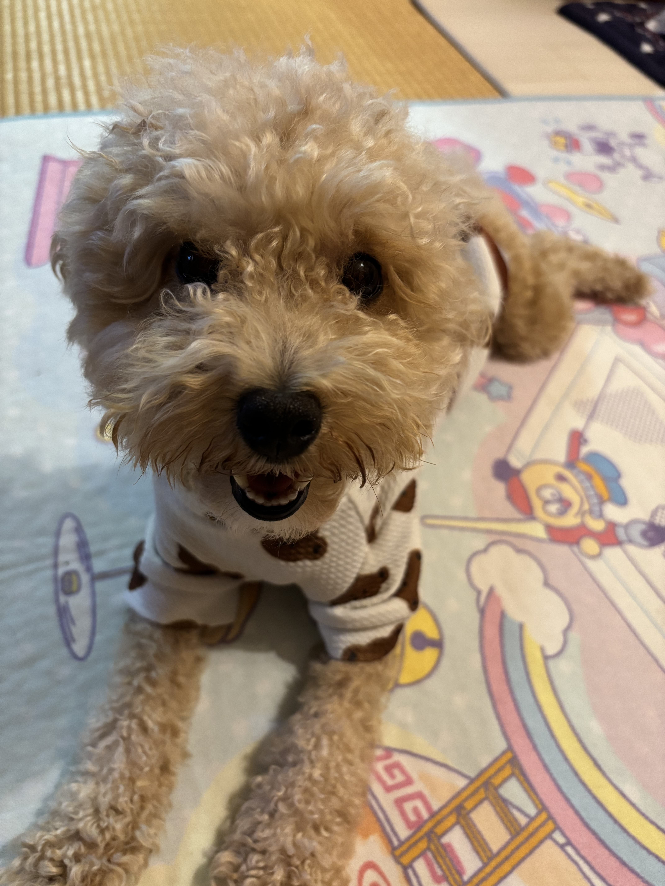
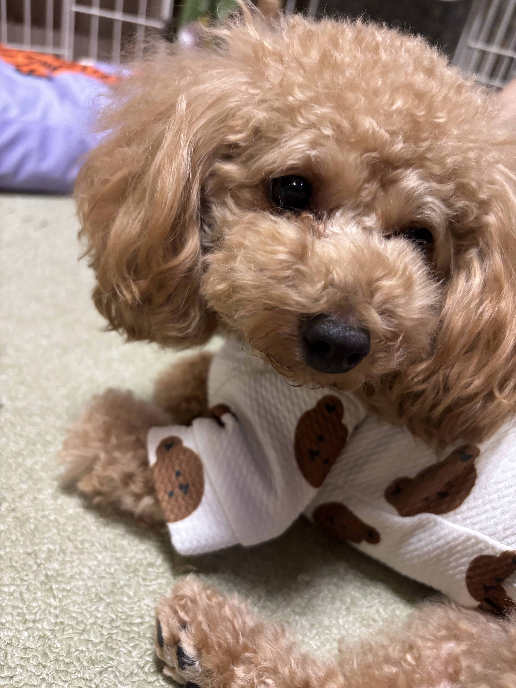
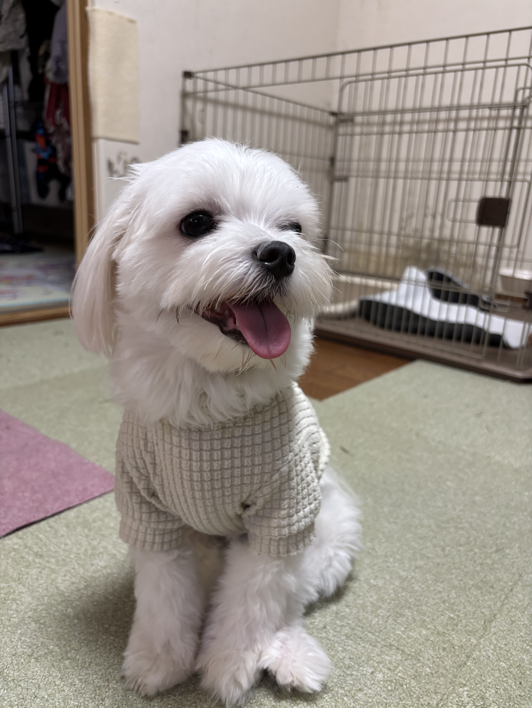
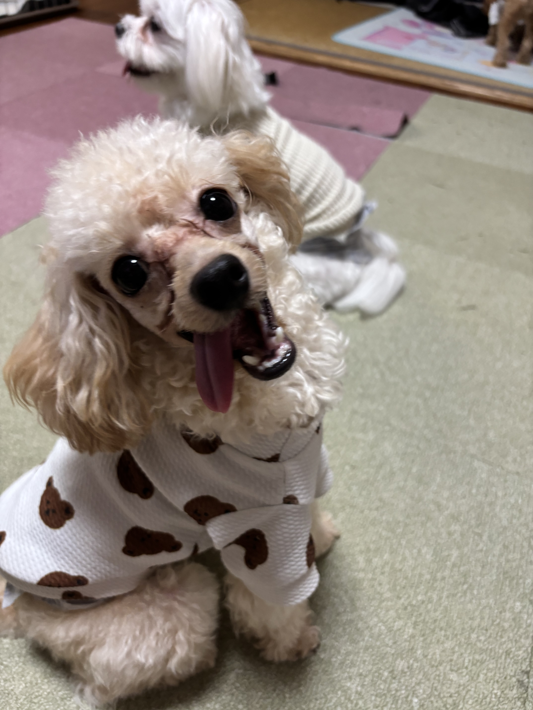
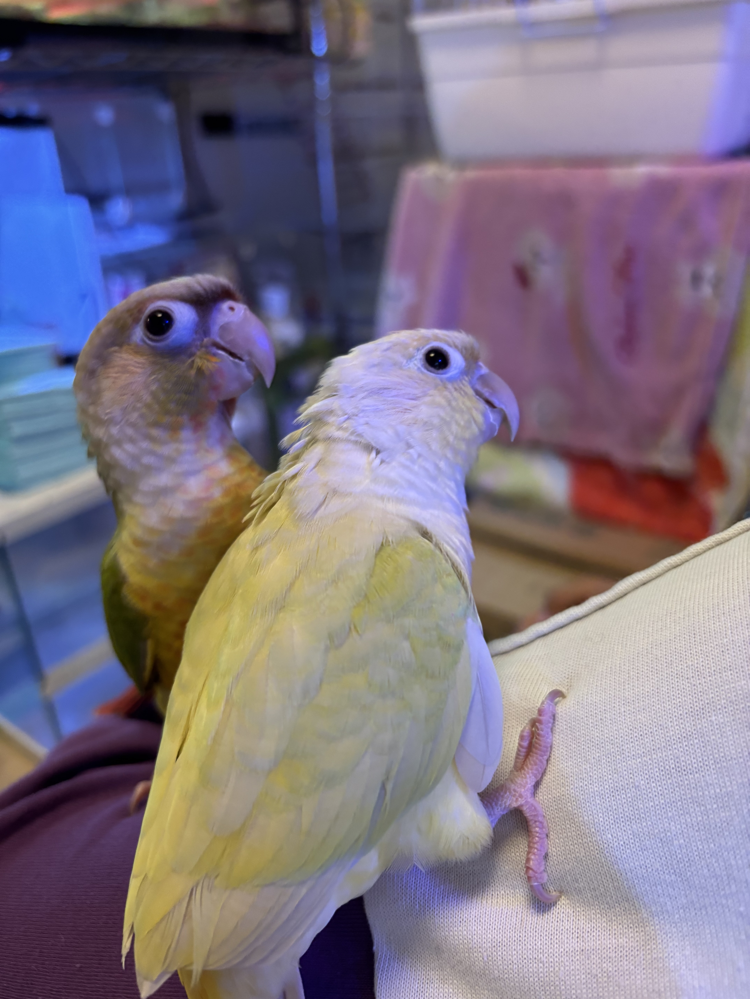
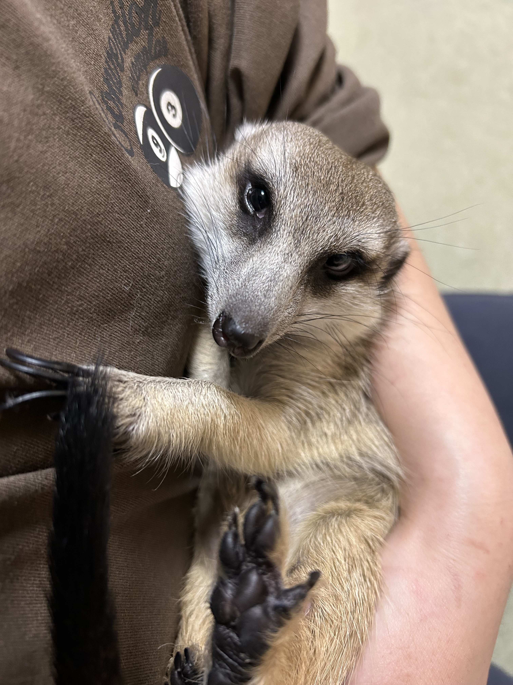
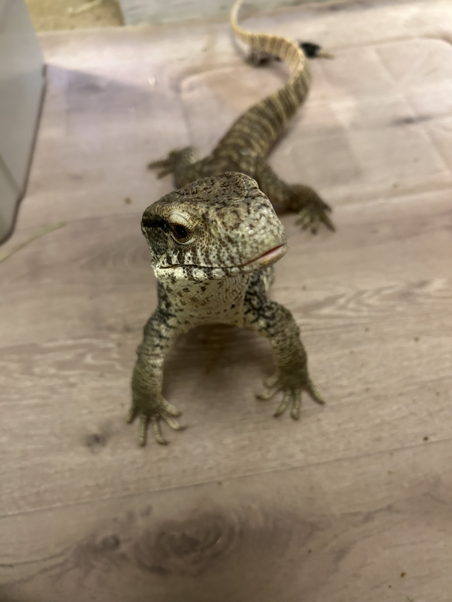
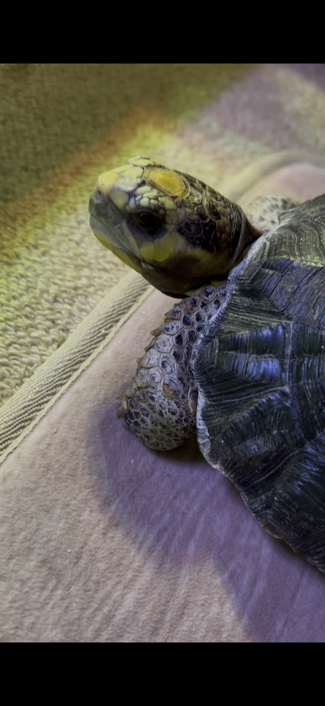

ここでは、たくさんのペットたちと暮らす日々を紹介します！

アカアシリクガメのこたろうをお迎えして、生き物の世界にどっぷりハマった主。今現在はペットショップでエキゾチックアニマルとアクアを担当してます！写真はアニマルカフェで撮影したものですw
ペットショップで働きながら、たくさんの動物さんたちと暮らしています。 毎日小さな命たちと向き合いながら、癒しと喜びを感じています！









はあとは知り合いの方から紹介して頂いた保護猫で生後１ヶ月くらいで我が家に来ました！2時間おきのミルクで💩も自力でできなくて病院に通ったりもしてましたが、今では立派な我が家の長男になりました！
人懐っこくてビビりなライ！何度も会うワン友のパパさんママさんに甘え散らかすライはみんなの人気者！ただただ柴犬が苦手で、会うと吠えまくります💦でも、慣れちゃえば仲良しになれるとても賢い子です！
レノはとにかく甘えん坊でママっ子！兄弟たちにすぐキレるマイペースボーイ💦 でも、家族みんなのことが大好きですぐにペロペロしにくる可愛いやつです！
ロアはとにかく食いしん坊で、食べ物のことになると目の色が変わります💦 お姉ちゃんが大好きでお姉ちゃんが学校から帰ってくると大喜びでお出迎えしてくれます！
ルゥはとにかく元気いっぱいで遊ぶの大好きっ子！1人でおもちゃで上手に遊んでます！ご飯の時間も大好きで、飛び上がって喜びます！家族みんなのことが大好きな甘えん坊さんです！
ピトちゃんはツンデレ！コロちゃんはかまってちゃんな2羽のウロコインコ！2羽とも人懐っこくて、肩に乗ってきたり頭を撫でられるのが大好きです！
ちくわはとにかく好奇心旺盛で、ケージの外に出るとあちこち探検しまくります！人懐っこくて甘えん坊！ミーアキャット特有の背筋を伸ばして立つ姿がとっても可愛いです！三女のことが大好きです❤️
ルイはサバンナモニターだということを忘れるくらいおっとりしているオオトカゲですw大人しくてご飯を食べるのが下手だけどそこも可愛い！いつもリクガメのこたろうにご飯を横取りされてます。２０２６年の夏に旅立ちました。
こたろうは人生で初めて飼育をしている爬虫類！私を爬虫類の沼に落とした子です💦ルイのご飯を横取りする困ったちゃんですが、のんびり屋さんで見ているだけで癒されます！お散歩も大好きで、家中を探検してます！
このページを訪れてくれてありがとうございます！これから色んなサイトを作っていきたいです！